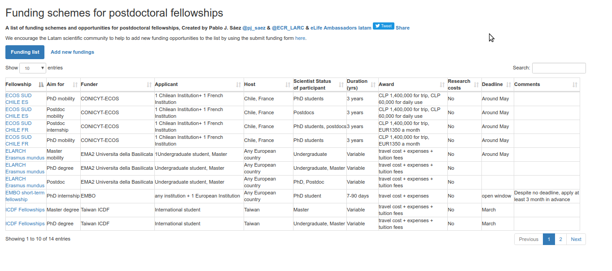

ECR-LARC Bourses et financements pour des chercheurs provenant de l'Amérique Latine #eLifeAmbassadors
eLife est un journal scientifique en libre accès qui publie des articles de recherche en biologie et en médecine. L'initiative #eLifeAmbassadors cherche à encourager la diffusion des résultats scientifiques dans les communautés locales, tout en les connectant avec les développements internationaux
Ce site a été crée pour faciliter l'accès des jeunes chercheurs latino-américains aux informations des bourses et financements

Clockwork - En Progrès
Ce site est un projet personnel que j'ai créé pour travailler mes habilités en JS.
En tant que ninja de l'optimisation du tout, j'ai désigné cette application Rails pour optimiser l'utilisation du temps dans des courtes périodes (au max 1 heure).

Reecover
Ce site est le projet de fin de cours réalisé en équipe pendant les 2 dernières semaines au Wagon.
C'est une application Rails pour les sportives en fin de carrière qui cherchent à développer son projet de reconversion professionnelle.